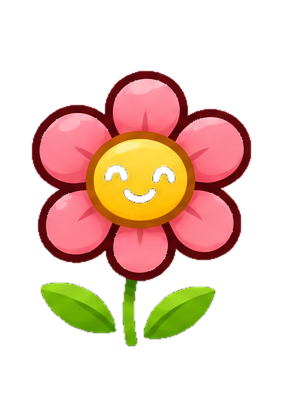
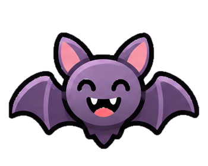

📖 How to Play
Light the flowers. Save the bats.
Place two torches around the garden to solve each puzzle.

Flowers
Must receive light

Bats
Must stay in darkness
Place two torches in the slots around
the 5 × 5 garden. Each torch sends out
three rays.
Rocks block light.
Use them to protect bats and control where the rays travel.
✓
Illuminate every flower while keeping
every bat dark.
🏆 Complete all 10 puzzles to finish today's Gauntlet!